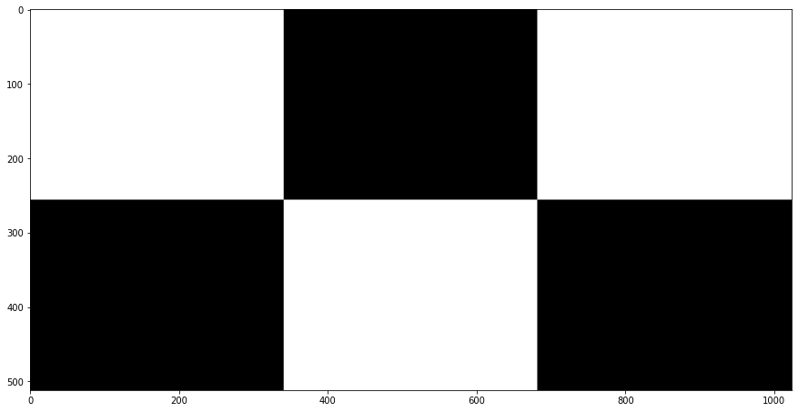

Corte e Criação de Imagens
1. Imagem como Matriz
Uma imagem aberta com o OpenCV tem a estrutura de uma matriz do Numpy.
Para manipular essa imagem, podemos usar a sintaze facilitada dessa biblioteca, bem como trabalhar com loops.
import cv2
import numpy as np
import time
print ("OpenCV Version : %s " % cv2.__version__)
Vamos ler o arquivo imagem.png.
{kind=link}
img = cv2.imread("img/imagem.png")
img.shape
cv2.imshow("Imagem BGR", img)
cv2.waitKey()
cv2.destroyAllWindows()
Note que, apesar de vermos a imagem em tons de cinza, ela tem os três componentes B, G, R.
Vamos então convertê-la para níveis de cinza, usando a função cvtColor().
Note que a imagem de saída não tem mais o terceiro canal, mas se mantém inalterada em relação à original.
entrada = cv2.cvtColor(img, cv2.COLOR_BGR2GRAY)
print(entrada.shape)
# Mostrar a imagem
cv2.imshow("Imagem BGR", img)
cv2.imshow("Imagem Cinza", entrada)
cv2.waitKey()
cv2.destroyAllWindows()
Criando uma imagem vazia.
A seguir, vamos criar uma imagem, denominada saida, com o mesmo tamanho da imagem de entrada. Essa imagem possui todos os pixels com valor zero.
Primeiramente vamos fazer uma cópia da imagem original, usando a função copy(), isso garantirá que a imagem de saída tenha o mesmo tamanho da imagem de entrada e que a imagem de entrada não seja alterada.
saida = entrada.copy()
Voce pode mostrar a imagem usando a função imshow() e conferir que a imagem de saída é uma cópia da imagem de entrada.
Podemos pintar a imagem de branco atribuindo o valor 255 a todos os pixels. Lembre-se que : significa todos os pixels.
saida[:] = 255
Note que, depois de zerar, vemos a imagem toda como preto.
Pergunta 1: O que acontece se atribuirmos o valor 127 a todos os pixels?
Pergunta 2: O que aconteceria se fizéssemos saida = entrada para copiar a imagem?
Respostas
-
A imagem ficaria com um tom de cinza médio.
-
Neste caso, a imagem de saída seria apenas um ponteiro para a imagem de entrada. Qualquer alteração em uma delas afetaria a outra.
cv2.imshow("Imagem Cinza", entrada)
cv2.imshow("Imagem Alterada", saida)
cv2.waitKey()
cv2.destroyAllWindows()
Outro forma de criar uma imagem vazia é usando np.zeros_like().
Esta função cria uma imagem com as mesmas dimensões, like, da imagem de entrada, mas com todos os pixels com valor 0.
saida = np.zeros_like(entrada, dtype=np.uint8)
Podemos ver que a imagem é toda preta utilizando a função do numpy np.unique().
Esta função retorna os valores únicos de uma matriz.
print(np.unique(saida))
2. Cortando uma imagem
A seguir, vamos aprender a cortar partes de uma imagem.
Podemos fazer um corte horizontal e um cortes vertical utilizando a indexação inteligente do numpy.
Pergunta: Na célula abaixo, porque estamos convertendo o valor para inteiro?
horizontal = entrada.copy()
vertical = entrada.copy()
height, width = entrada.shape
# Corte Horizontal
horizontal[:int(height/2), :] = 0
# Corte Vertical
vertical[:, int(width/2):] = 0
cv2.imshow("Entrada", entrada)
cv2.imshow("Horizontal", horizontal)
cv2.imshow("Vertical", vertical)
cv2.waitKey()
cv2.destroyAllWindows()
Prática 4.3
Crie um arquivo chamado arara.py que contenha uma classe chamada ProcessImage com as seguintes especificações:
A classe ProcessImage deve possuir um método chamado run_image que:
- Recebe uma imagem.
- Salva a imagem recebida em uma variável da classe chamada
self.bgr. - Realiza um corte na imagem conforme ilustrado na figura abaixo, onde as áreas brancas devem manter as partes correspondentes da imagem e as áreas pretas devem ser removidas, permanecendo pretas.
A classe ProcessImage deve possuir um método chamado show_image que exibe a imagem processada.
O arquivo arara.py deve ter uma função chamada main que:
- Cria um objeto da classe
ProcessImage. - Abre a imagem localizada em img/arara.jpg.
- Utiliza o método
run_imagepara processar a imagem. - Chama o método
show_imagepara exibir a imagem processada.
{kind=link}
